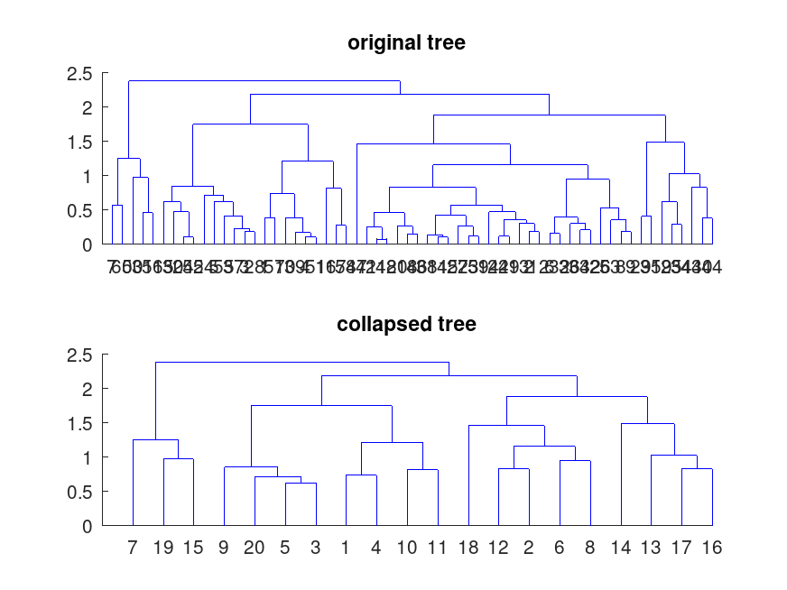
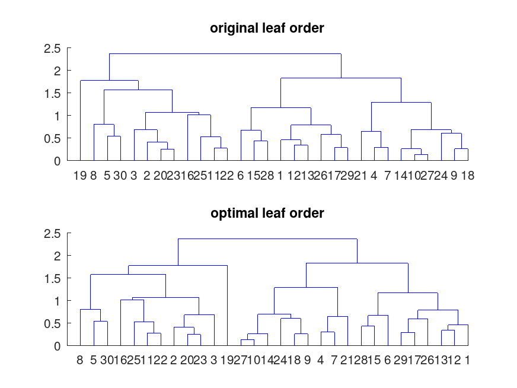

Function Reference: dendrogram
- statistics: dendrogram (tree)
- statistics: dendrogram (tree, p)
- statistics: dendrogram (tree, prop, val)
- statistics: dendrogram (tree, p, prop, val )
- statistics: h = dendrogram (…)
- statistics: [h, t, perm] = dendrogram (…)
Plot a dendrogram of a hierarchical binary cluster tree.
Given tree, a hierarchical binary cluster tree as the output of
linkage, plot a dendrogram of the tree. The number of leaves shown by
the dendrogram plot is limited to p. The default value for p is
30. Set p to 0 to plot all leaves.
The optional outputs are h, t and perm:
- h is a handle to the lines of the plot.
- t is the vector with the numbers assigned to each leaf. Each element of t is a leaf of tree and its value is the number shown in the plot. When the dendrogram plot is collapsed, that is when the number of shown leaves p is inferior to the total number of leaves, a single leaf of the plot can represent more than one leaf of tree: in that case multiple elements of t share the same value, that is the same leaf of the plot. When the dendrogram plot is not collapsed, each leaf of the plot is the leaf of tree with the same number.
- perm is the vector list of the leaves as ordered as in the plot.
Additional input properties can be specified by pairs of properties and values. Known properties are:
-
"Reorder"Reorder the leaves of the dendrogram plot using a numerical vector of size n, the number of leaves. When p is smaller than n, the reordering cannot break the p groups of leaves. -
"Orientation"Change the orientation of the plot. Available values:top(default),bottom,left,right. -
"CheckCrossing"Check if the lines of a reordered dendrogram cross each other. Available values:true(default),false. -
"ColorThreshold"Not implemented. -
"Labels"Use a char, string or cellstr array of size n to set the label for each leaf; the label is dispayed only for nodes with just one leaf.
See also: cluster, clusterdata, cophenet, inconsistent, linkage, pdist
Source Code: dendrogram
Example: 1
## simple dendrogram
y = [4, 5; 2, 6; 3, 7; 8, 9; 1, 10];
y(:,3) = 1:5;
dendrogram (y);
title ("simple dendrogram");
|

Example: 2
## another simple dendrogram
v = 2 * rand (30, 1) - 1;
d = abs (bsxfun (@minus, v(:, 1), v(:, 1)'));
y = linkage (squareform (d, "tovector"));
dendrogram (y);
title ("another simple dendrogram");
|

Example: 3
## collapsed tree, find all the leaves of node 5
X = randn (60, 2);
D = pdist (X);
y = linkage (D, "average");
subplot (2, 1, 1);
title ("original tree");
dendrogram (y, 0);
subplot (2, 1, 2);
title ("collapsed tree");
[~, t] = dendrogram (y, 20);
find(t == 5)
ans =
5 14 30 39 60
|

Example: 4
## optimal leaf order
X = randn (30, 2);
D = pdist (X);
y = linkage (D, "average");
order = optimalleaforder (y, D);
subplot (2, 1, 1);
title ("original leaf order");
dendrogram (y);
subplot (2, 1, 2);
title ("optimal leaf order");
dendrogram (y, "Reorder", order);
|

Example: 5
## horizontal orientation and labels
X = randn (8, 2);
D = pdist (X);
L = ["Snow White"; "Doc"; "Grumpy"; "Happy"; "Sleepy"; "Bashful"; ...
"Sneezy"; "Dopey"];
y = linkage (D, "average");
dendrogram (y, "Orientation", "left", "Labels", L);
title ("horizontal orientation and labels");
|